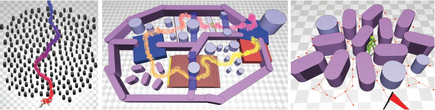

|
Deformable Motion: Squeezing into Cluttered Environments |
|  |
|
We present an interactive method that allows animated characters to navigate through cluttered environments. Our characters are equipped with a variety of motion skills to clear obstacles, narrow passages, and highly constrained environment features. Our control method incorporates a behavior model into well-known, standard path planning algorithms. Our behavior model, called deformable motion, consists of a graph of motion capture fragments. The key idea of our approach is to add flexibility on motion fragments such that we can situate them into a cluttered environment via constraint-based formulation. We demonstrate our deformable motion for realtime interactive navigation and global path planning in highly constrained virtual environments. |
|
Publication Myung Geol Choi, Manmyung Kim, Kyunglyul Hyun and Jehee Lee Deformable Motion: Squeezing into Cluttered Environments Computer Graphics Forum (EUROGRAPHICS 2011), Vol. 30, No. 2, pp 445-453, April 2011 |
|
download:
[paper]
[video]
|